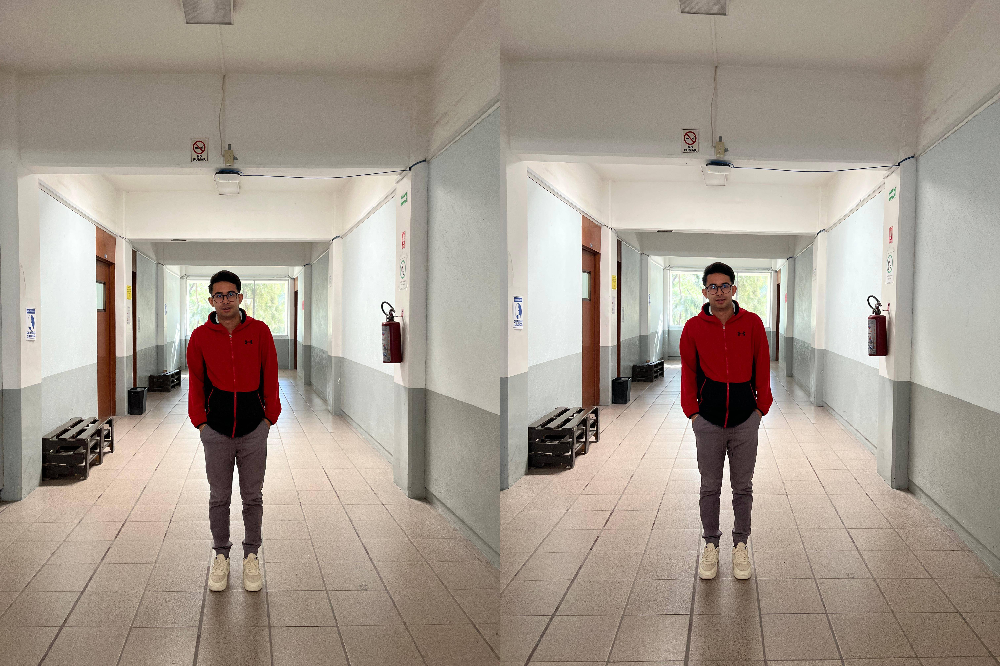
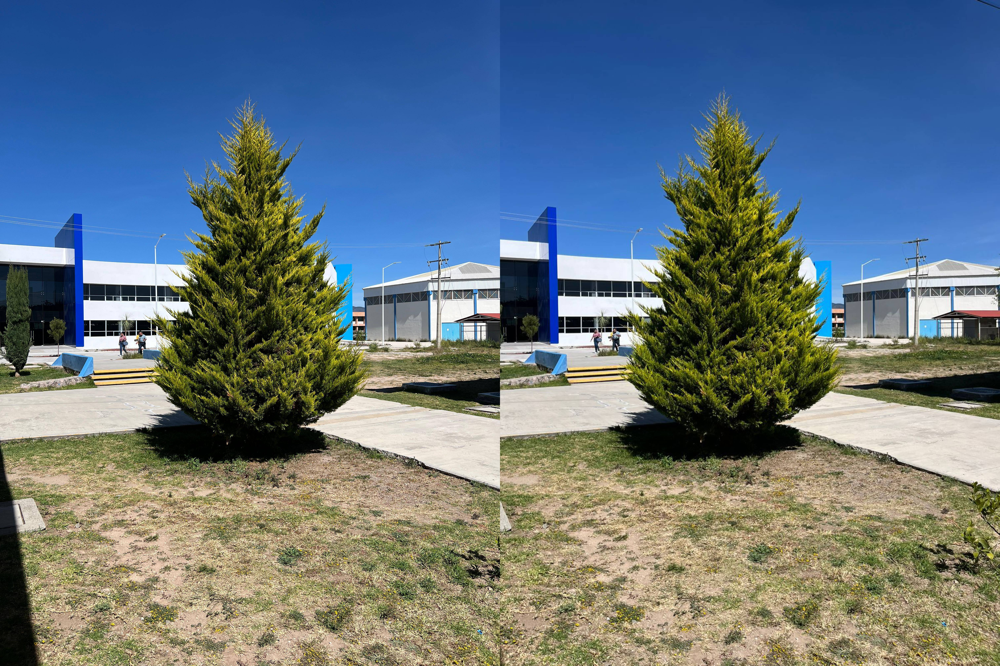
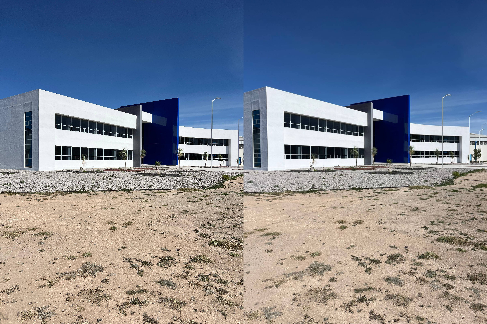

Imagen estereoscópica única left/right Personal

Galería de Imágenes Anaglifo Personal
Imagen estereoscópica única left/right Objeto

Galería de Imágenes Anaglifo Objeto
Imagen estereoscópica única left/right Infraestructura de edificios

Galería de Imágenes Anaglifo Infraestructura de edificios